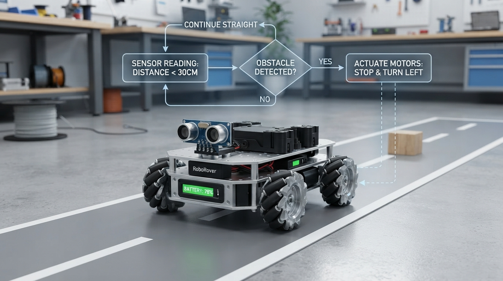

A robot brain does not begin with advanced AI. It can begin with a variable, a decision, and a loop.
This Professor OS lesson introduces robotics programming through a deterministic RoboRover simulation. Students learn to:
• store sensor readings and changing battery state;
• distinguish assignment from comparison;
• map distance thresholds to drive, slow, and clean actions;
• trace loop iterations and verify predictions with assertions;
• recognize real-world limits such as noise, calibration, latency, and actuator saturation.
The strongest teaching move is to have learners predict the action sequence and battery estimate before running the code. That turns execution into an experiment rather than a passive demonstration.
Try the lab with a new sensor list, calculate the result by hand, then compare the prediction with the trace. What rule would you add first for low battery or noisy measurements?
Explore Professor OS: https://connect.vin/professor-os
#Robotics #Python #STEM #Education
This Professor OS lesson introduces robotics programming through a deterministic RoboRover simulation. Students learn to:
• store sensor readings and changing battery state;
• distinguish assignment from comparison;
• map distance thresholds to drive, slow, and clean actions;
• trace loop iterations and verify predictions with assertions;
• recognize real-world limits such as noise, calibration, latency, and actuator saturation.
The strongest teaching move is to have learners predict the action sequence and battery estimate before running the code. That turns execution into an experiment rather than a passive demonstration.
Try the lab with a new sensor list, calculate the result by hand, then compare the prediction with the trace. What rule would you add first for low battery or noisy measurements?
Explore Professor OS: https://connect.vin/professor-os
#Robotics #Python #STEM #Education

Teach a Robot Brain in Python: Variables, Decisions, Loops, and Sensor Feedback
A beginner robotics lesson that turns Sense–Think–Act into executable Python through threshold decisions, battery state, prediction, tracing, and simulation experiments.